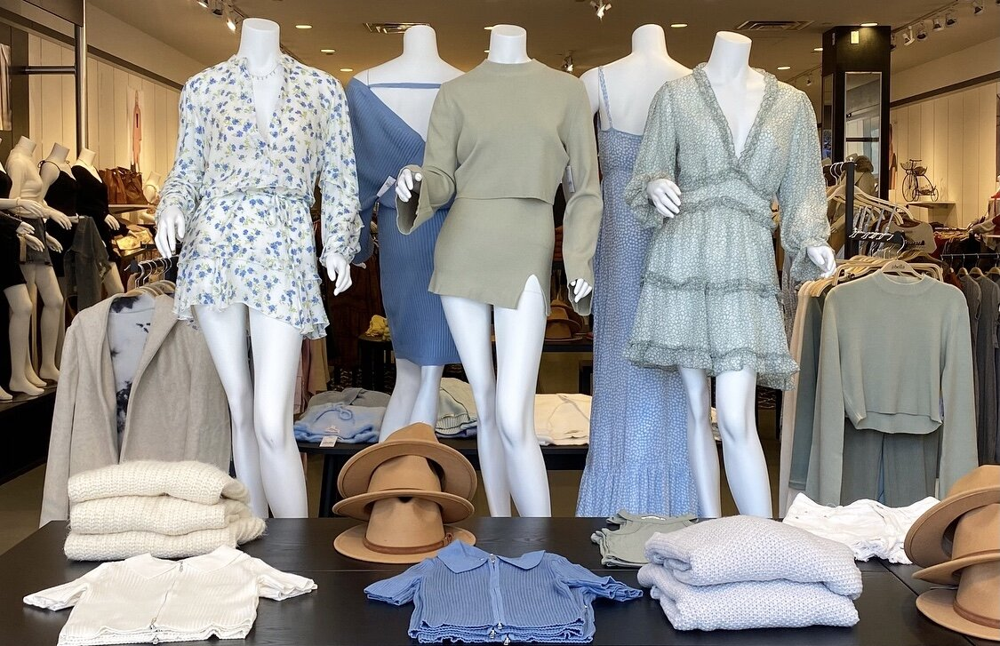
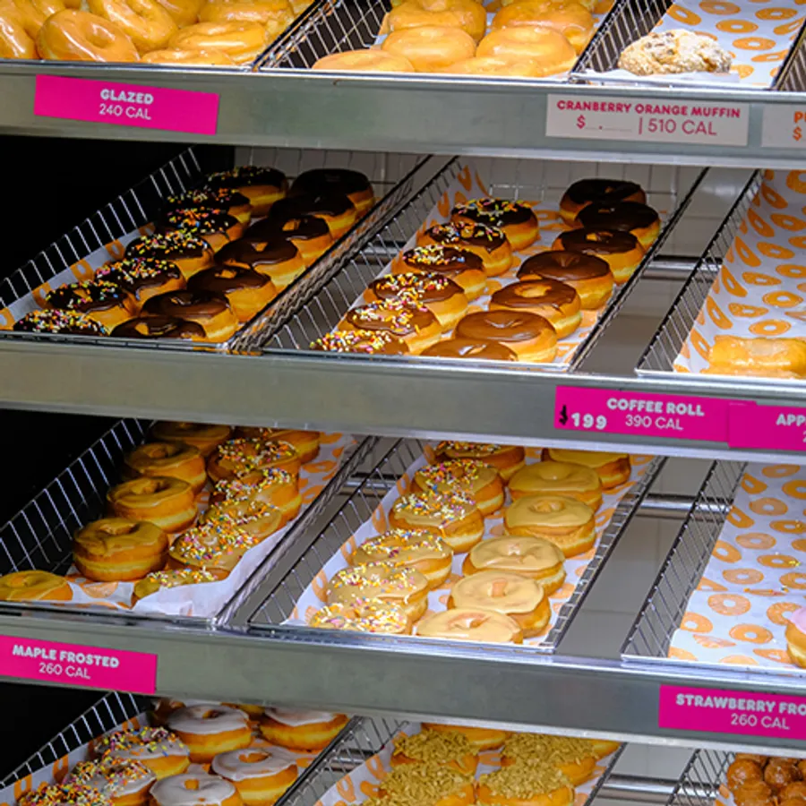
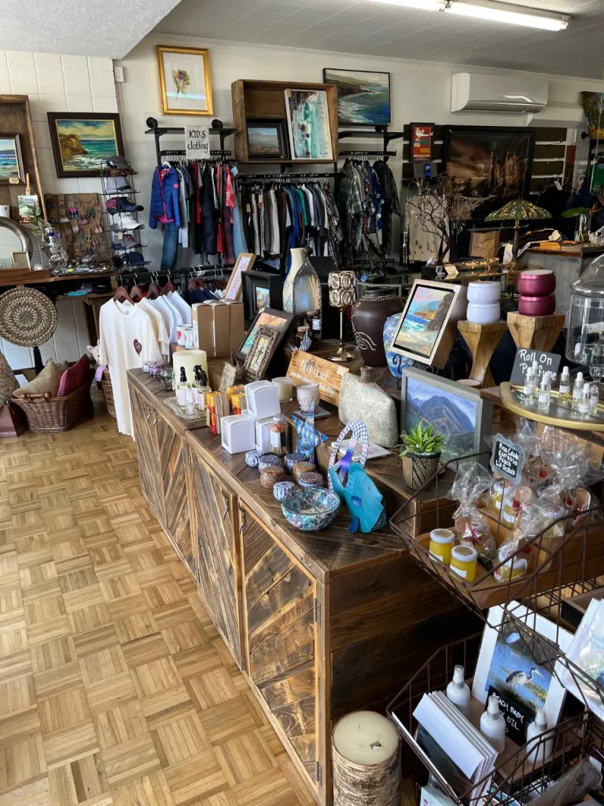
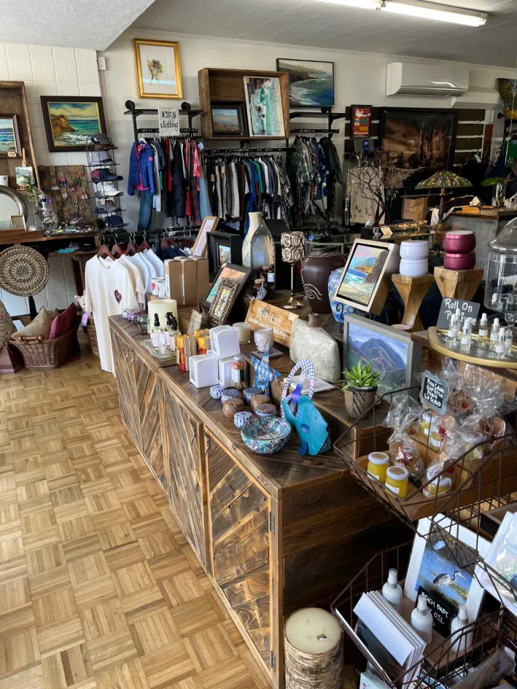

Sara Montoya
I am a current student at the Univeristy f California Riverside and I am studying in Pre-Business. My goal is to learn more about the business world and to study hard enough to get into the school of business at Boston Univeristy. I will utlilize the skills and experience I get from UCR and use it to create a business of my own, or manage a business of my own in the future. I hope to help those in need with my business skills and to make my mark in the world of business.
My past experiences include retail, restaurants, and volunteer work. In the beginning of the pandemic I took up sewing as a hobby and started creating face masks to sell online. Once my small business took off, I was able to sell my creations at a local thrift store where I learned how to manage money and how to calculate profit with the store owners. I also worked at a boutique where I learned about stocking inventory, customer service, and the basics needed to be a retail sales associate. In the food industry I learned how to work in a fast paced environment, and how to accomodate to every customers need without complaint. Keeping customers content is the most important thing in any business and from my past experiences I can confidently say I have accomplished that. In my free time, I applied to volunteer at my church and a non-profit organization called, Families Forward. I learned how to input data, and I also worked on my organizational skills. These colunteering experiences really helped me to look past making money, and to look at why businesses and organizations do what they do.
I am currently looking to apply for internships that will help me learn more about either hotel management or company management. It is going to take a lot of work to own a business, and learning now is the best way to stay confident with my business choices and career choice.
Experience
Teaching Assistant
• Ran sessions to help students learn how to code
• Reviewed and graded student coding projects
• Created educational content to help promote student education
• TA'd for over 400 students each academic quarter
Education
UC Riverside
University of California Riverside
University of California Riverside
Portfolio




